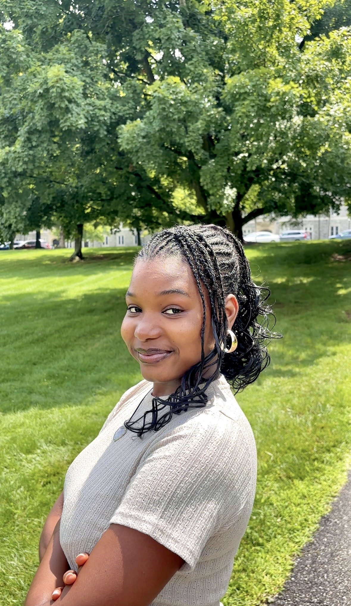

Saratou Bako Bagassa
Computer Science and Economics student. I am a

-->Who I am
I am an international student from Niger who found Computer Science almost by accident. My first exposure was an Intro to Robotics class during my first semester at Berea, in a field I had once assumed was out of reach because of gender stereotypes back home. I have been hooked ever since, and I now split my technical energy between the Student Software Development Team and projects outside of the classroom.
But service has always been the throughline of my life, long before code was. Growing up in Niger, I watched child marriage affect girls I knew, their health, their ability to stay in school, and eventually understood that the deeper issue was not the practice itself but the gender inequity underneath it, showing up in different forms across the community. That is part of why I added Economics as a second major. Working on policy papers and representing my school at Model African Union showed me how much impact policy has on people who never get a say in shaping it.
I am working toward using technology, economics, and nonprofit experience together, to help design systems and policies that are more inclusive and to help people from marginalized backgrounds reach their full potential.
Four schools, one thread
Berea College
B.A. Computer Science & Economics, Data Analysis concentration · GPA 3.94/4.00Relevant coursework: Software Design and Implementation, Data Structures and Algorithms, Discrete Math, Applied Statistics, Principles of Microeconomics, Scalable Algorithms and Objects, Game Theory, Intermediate Macroeconomics.
Take Action Lab, Tilting Futures
Cape Town, South AfricaHuman rights–focused semester program: systems thinking, self-awareness, intercultural competence, human rights coursework, and a community apprenticeship. Served as a student residence leader for my cohort house.
African Leadership Academy
Johannesburg, South Africa · $60,600 financial award (4% acceptance rate)Two-year pre-university program combining Cambridge International A-Levels (Mathematics, Biology, French) with ALA's Entrepreneurial Leadership, African Studies, and Writing and Rhetoric curriculum.
While there: English for Excellence Tutor (supported 16 peers) · Peer Counselor (emotional support for assigned first-year students) · Head of Sales, student enterprise "Footprints"
Collège/Lycée Mariama
Niamey, NigerClass leader for 3 years.
Highlights
- Founder of Relvox
- Data Science Intern, DSPG at Virginia Tech
- Girls First Fund, Changemakers Council Member
- 4× Dean's List, Berea College
Current focus
- Team Lead, Berea College Software Development
- Teaching Assistant, Data Structures & Algorithms